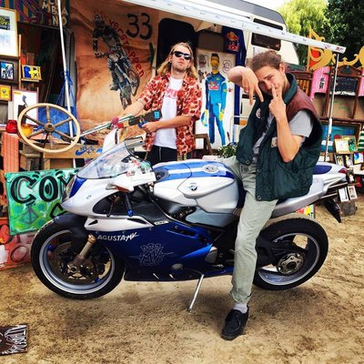

vrijdag
14:00-04:00
A future Ski-bar
Het collectief Computery Guys beschildert alles wat los en vast zit. Je kent ze misschien van Down The Rabit Hole, De Kerk of Doornroosje. Als zij aanwezig zijn, dan is het feest! In de garage van Jong Actief ligt een hoop zooi die ze in één dag ombouwen tot een futuristische ski-bar, compleet met dj's en performances. Let's put the art in party!


vrijdag
00:00-04:00
Adoda
Decennia lang dacht men dat alles om de aarde draaide, totdat de theorie van Copernicus stelde dat alles juist om de zon draait. Toen kwamen de jonge honden van Adoda; na jaren lang dansen, plaatjes draaien, produceren en filosoferen zagen zij een nieuw licht. Geen van bovenstaande theorieën hebben het bij het juiste eind, waar het om draait is niet belangrijk, zolang we maar kunnen dansen.

vrijdag
00:00-04:00